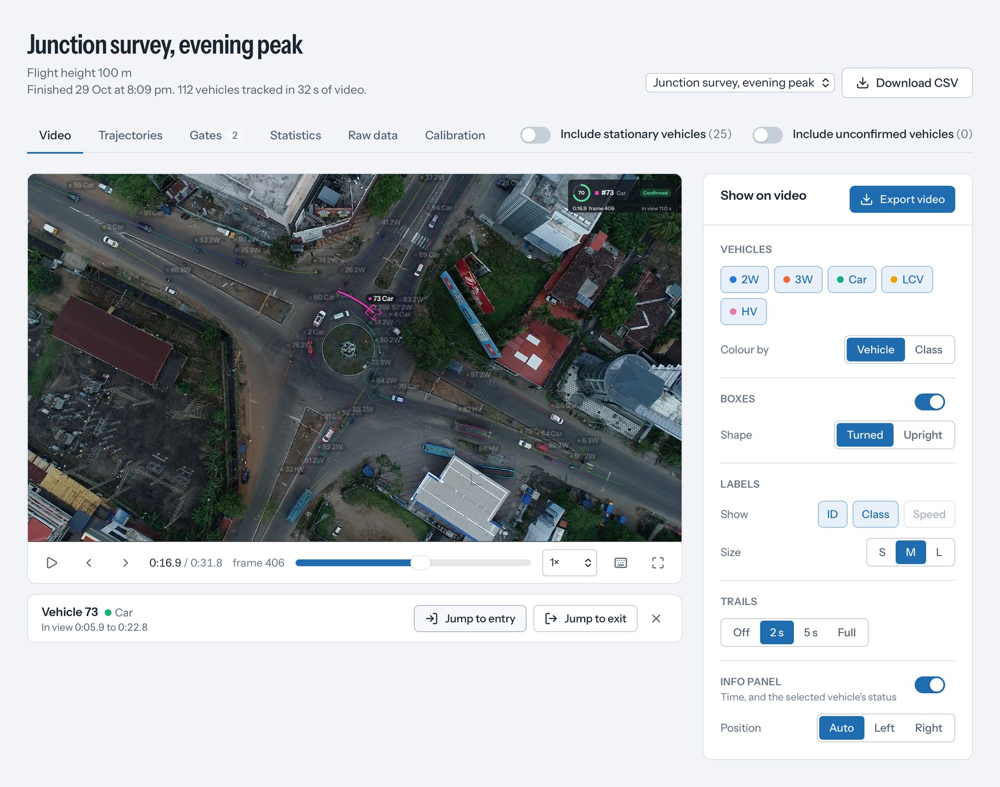
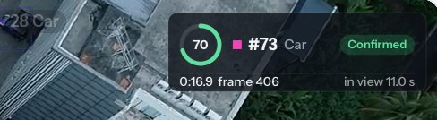
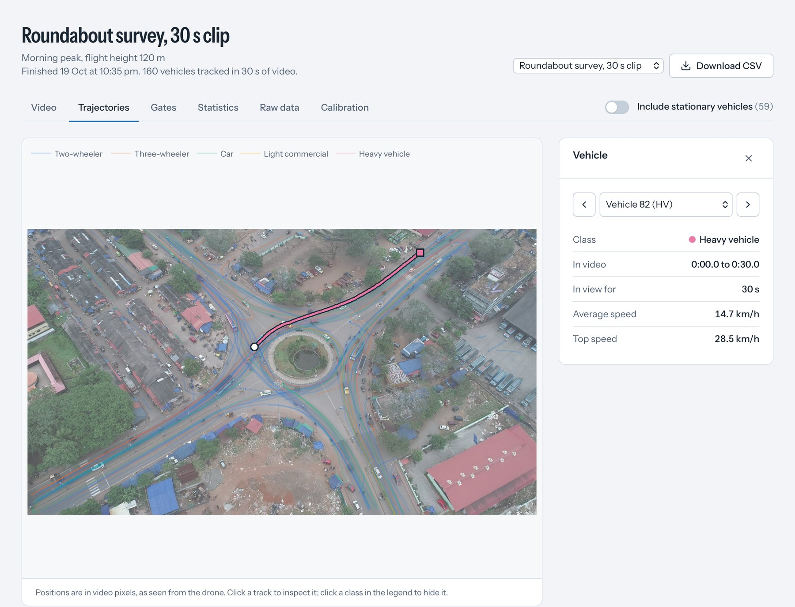
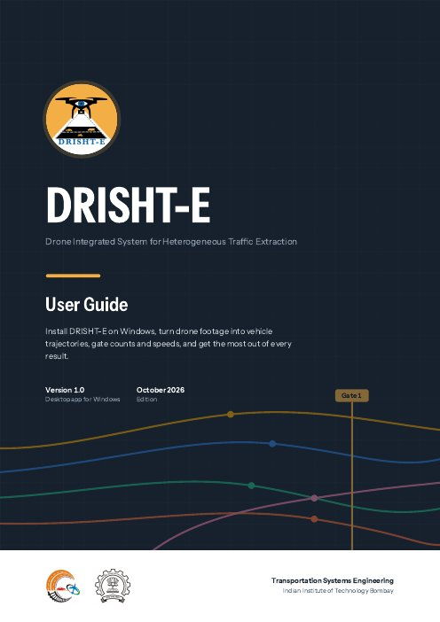

Classified volume counts
Every vehicle that crosses a gate is logged with its ID and the time, and its type (2W, 3W, car, LCV or HV) comes from the tracking data. The time of each crossing lets you group counts into 5- or 15-minute intervals.
Drone Integrated System for Heterogeneous Traffic Extraction
Count, classify and measure every vehicle on a road from a single drone video.
Film a junction or a stretch of road from above. DRISHT-E picks out every motorbike, auto-rickshaw, car, van, bus and truck, follows each one through the video, and tells you how many passed, which way they went and how fast they were moving.
For Windows 10 and 11. Works offline, and your videos never leave your computer.
What you're seeing: each box is one vehicle that DRISHT-E has found. The colour shows its type, the number is its ID, and the tail traces where it has just been.
A new signal, flyover, footpath or bus lane starts with the same questions. How many vehicles use this road? What kinds? Which way do they turn, and how fast do they go?
The usual answer is a team at the junction with tally sheets, or someone watching hours of video and clicking a counter. It is tiring work, it is easy to miss vehicles, and it records totals rather than how each vehicle actually moved.
Without fixed lanes, two-wheelers weave between cars and autos, while buses and trucks share the same space. Dozens of vehicles move at once, in every direction.
From above, one camera covers an entire junction. DRISHT-E does the watching: it finds each vehicle, follows it from frame to frame, and turns the video into numbers you can put in a report.
Four steps take you from a drone flight to a spreadsheet. You don't need any programming: everything is point and click, and the default settings are tuned for Indian drone footage.
Fly a drone over the junction or road. Keep it steady, point the camera as straight down as you can, and keep the whole study area in view.
Load the video into DRISHT-E, choose which vehicle types to look for, and draw counting lines, called gates, across the roads you want counted.
DRISHT-E finds and follows every vehicle by itself, in the background. Queue several videos and they run one after another. An NVIDIA graphics card makes this about ten times faster.
Watch the video with every vehicle marked, check the counts and charts, add a few known ground points to get speeds in km/h, and download the data.
DRISHT-E gives you the data behind the most common traffic surveys. Everything downloads as CSV spreadsheets that open in Excel, Google Sheets, Python, R or MATLAB.
Every vehicle that crosses a gate is logged with its ID and the time, and its type (2W, 3W, car, LCV or HV) comes from the tracking data. The time of each crossing lets you group counts into 5- or 15-minute intervals.
Put a gate on every arm of a junction or roundabout. A vehicle keeps the same ID at every gate it crosses, so matching the arm it entered on with the arm it left by gives you turning counts.
Once the video is calibrated, every gate crossing also records the vehicle's speed in km/h at that line.
Each vehicle's speed over time, with its average and top speed, plus a speed distribution and summary figures for the whole video.
The position of every vehicle in every frame, in metres once calibrated, with its direction of travel and size. The raw material for research into how mixed traffic behaves, such as how vehicles share the road width or interact at a merge.
The share of each vehicle type, how many vehicles were in view from moment to moment, how long they stayed, and a heat map of which paths carry the most traffic.
Every result comes from the same set of tracked vehicles, so the video, the counts, the speeds and the downloaded data always agree with each other.

Play your video back with a box, a label and a short trail on every vehicle, so you can see exactly what DRISHT-E saw. Click any vehicle to follow it through the scene.
A small panel shows the vehicle's type, how long it has been in view, and a health score: how sure DRISHT-E is, at that moment, that it is still following the same real vehicle. Save the marked-up video as an MP4 for presentations and reports.


Before processing, draw a line across the road wherever you want a count: each approach to a junction, the entry and exit of a roundabout, or a point midway along a road. DRISHT-E records every vehicle that crosses each line, with the time.
For each gate you see how many crossings there were and how many different vehicles made them, with separate downloads for each gate.

A video only knows pixels. To turn pixels into metres and km/h, click four or more spots on the road whose map coordinates you know, such as survey marks or kerb corners, and type in their coordinates, in metres or as latitude and longitude. This step is called calibration.
DRISHT-E lays a metre grid over the road, shows how far off each point is, and picks out one that looks mistyped. A measuring tool lets you check a distance you know, such as a lane width, before you rely on the numbers. It also corrects for the drone drifting during the flight, so speeds stay true. You can calibrate a finished job at any time without processing it again.


The full dataset has one row for every vehicle in every frame of the video: its ID, type, position, size, direction of travel, track status and health, and, once calibrated, its position in metres and speed in km/h. Filter and sort it in the app, or download it as CSV.
Each gate has its own files too: every crossing, and the full paths of the vehicles that crossed. The user guide explains every column.
Any software makes mistakes, especially in dense traffic, under trees or at the edge of the frame. DRISHT-E is built to show you where its results are doubtful, rather than quietly hiding them.
Tracks that DRISHT-E never became confident were real vehicles are marked unconfirmed, and parked vehicles are marked stationary. Both are left out of the on-screen results by default, with a switch to bring them back in, and both stay in the downloads with a flag column.
Gate totals include confirmed vehicles only. Crossings by unconfirmed tracks are listed in a column of their own, so you can see how many were set aside.
In every frame, each vehicle has a health score and a status, such as Hidden behind a bus, Leaving the frame, or Suspect when the track may have jumped to a different vehicle.
Each calibration point shows its own error, a point that disagrees with the rest is named, and coordinates that look swapped are refused.
Before you report it: follow the vehicle in the video with the info panel on, and check it isn't marked Suspect or low in health before you use its path or speed.
DRISHT-E sorts vehicles into five types. Each keeps the same colour throughout the app, and the short code is what appears in the data.
With or without traffic signals. Put a gate on every arm to count turning and straight-through traffic.
Flows and speeds on a stretch of road away from junctions, in both directions.
Everything runs on your own computer. No internet connection is needed, and your videos are never uploaded anywhere.
No. DRISHT-E is a normal Windows program: you load a video, draw lines with the mouse and click buttons. The results open in Excel. If you do use Python, R or MATLAB, the same CSV files work there too.
Any MP4, MOV, AVI, MKV or M4V file shot from a drone. For the best results, fly steady, point the camera as straight down as you can, turn off the drone's on-screen display, and keep the whole study area in view with some road beyond each counting line. Flying lower helps DRISHT-E spot small, distant two-wheelers.
It depends on the length and resolution of the video, how busy the road is, and your computer. An NVIDIA graphics card makes detection roughly ten times faster than the processor alone. Without one, expect a job to take many times longer than the video itself, so try a short clip first to get a feel for your machine.
No. DRISHT-E runs entirely on your own computer and works without an internet connection. Your videos and results stay in a folder on your machine.
Download the gate's Crossings file and the full tracking data, join them on the vehicle ID to get each crossing vehicle's class, then count by class. Leave out rows where unconfirmed is True to match the counts shown in the app.
No. Gates are fixed once processing starts, so draw every line you might need before you begin. Calibration is different: you can add, change or redo it at any time.
One installer. You don't need administrator rights or an internet connection.
.exe file and every .bin file, and keep them together in one folder. The installer needs all of them.DRISHT-E-Setup-<version>.exe.To update, install the new version over the old one; your jobs and settings are kept. Results are saved in %LOCALAPPDATA%\DRISHT-E, and uninstalling leaves them in place.

A step-by-step guide from installing to troubleshooting, with a picture of every screen and an explanation of every column in the data. Read “Things to remember” before your first survey.